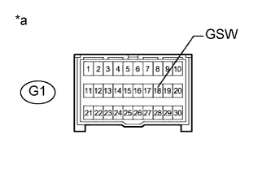

DTC B1243 Неисправность в цепи контакта GSW |
| Код DTC | Условие обнаружения DTC | Неисправный участок |
| B1243 | Выполняется любое из следующих условий:
|
|
| 1.ПРОВЕРЬТЕ DTC |
Сбросьте коды DTC (Нажмите здесь).
Проверьте коды DTC (Нажмите здесь).
| Результат | Следующий шаг |
| Выводится DTC B1243 | А |
| DTC B1243 не выводится | B |
|
| ||||
| А | |
| 2.ПРОВЕРЬТЕ ЖГУТ ПРОВОДОВ И РАЗЪЕМ (ГЛАВНЫЙ ЭБУ КУЗОВА – ЦЕНТРАЛЬНЫЙ БЛОК УПРАВЛЕНИЯ СИСТЕМЫ SRS) |
Отсоедините провод от отрицательного (-) вывода аккумуляторной батареи.
Снимите главный ЭБУ кузова (Нажмите здесь).
Отсоедините разъем G1 центрального блока управления системы SRS.
Измерьте сопротивление в соответствии со значениями, приведенными в таблице ниже.
| Контакты для подключения диагностического прибора | Режим | Заданные условия |
| G1-18 (GSW) - A-24 (GSW) | Всегда | Менее 1 Ом |
| G1-18 (GSW) - масса | Всегда | 10 кОм или более |
|
| ||||
| OK | |
| 3.ПРОВЕРЬТЕ ГЛАВНЫЙ ЭБУ КУЗОВА (НАПРЯЖЕНИЕ НА КОНТАКТЕ GSW) |
|  |
Отсоедините провод от отрицательного (-) вывода аккумуляторной батареи.
Отсоедините разъем G1 центрального блока управления системы SRS.
Подсоедините провод к отрицательному (-) выводу аккумуляторной батареи.
Измерьте напряжение в соответствии со значениями, приведенными в таблице.
| Контакты для подключения диагностического прибора | Положение переключателя | Заданные условия |
| G1-18 (GSW) - масса | Зажигание включено | 4,5-5,5 В |
| *a | Вид спереди разъема со стороны жгута проводов: (к центральному блоку управления системы SRS) |
|
| ||||
| OK | ||
| ||